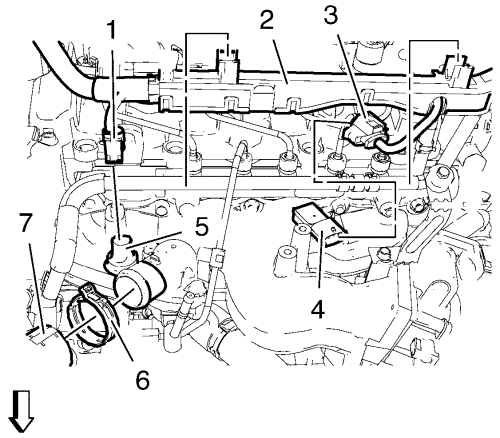
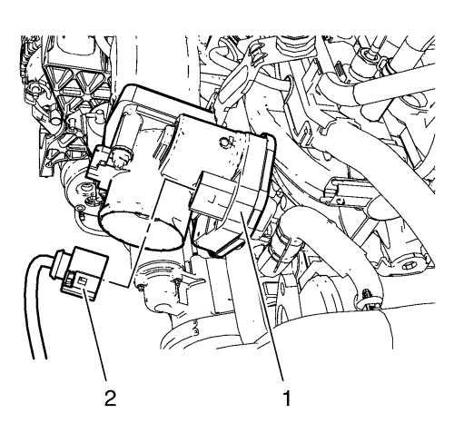
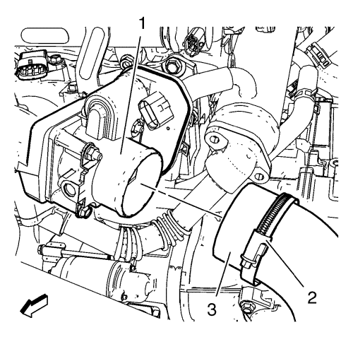
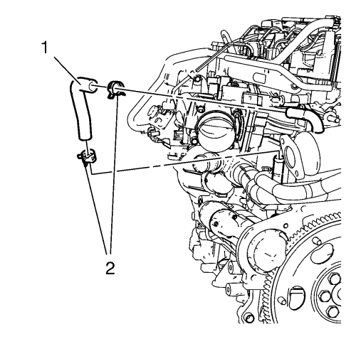
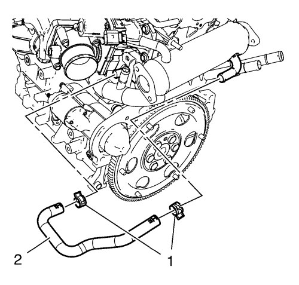
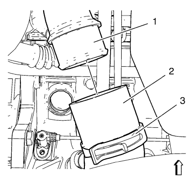
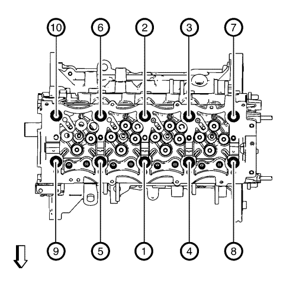
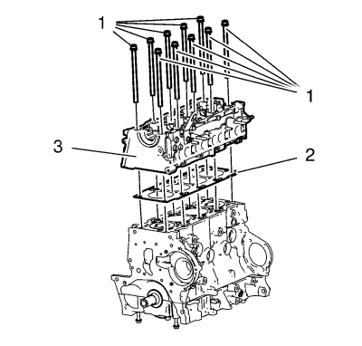
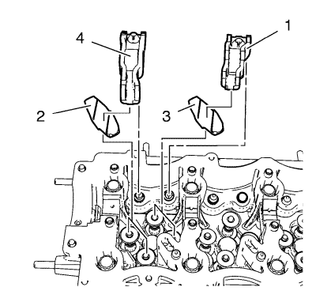
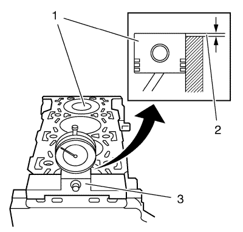

Sustitución de la culata
Herramientas especiales
| • | GE-571-B Galga de cuadrante |
| • | EN-45059 Kit de goniómetro de par de apriete |
Si desea informarse sobre herramientas regionales equivalentes, consultar Herramientas especiales .
Procedimiento de desmontaje
- Retire el conducto de salida del purificador de aire delantero. Consultar Sustitución del conducto delantero de salida del purificador de aire .
- Desmonte el catalizador. Consultar Sustitución del catalizador → 1.4L LUH y LUJ → 1.6L LXT, L2W → 1.6L LDE, LXV, 1.8L 2H0 y LUW → 2.0L Diésel LLW .
- Extraiga la tubería de alimentación de aceite del turbocompresor. Consultar Sustitución del tubo de alimentación de aceite del turbocompresor .
- Retire el tubo de retorno de aceite del turbocompresor. Consultar Sustitución del tubo de retorno de aceite de turbocompresor .
- Desmontar la tapa del árbol de levas. Consultar Sustitución de la tapa de los árboles de levas .
- Retire la correa dentada. Consultar Sustitución de la correa de distribución .
- Retire el tubo indicador del nivel de aceite. Consultar Extracción del tubo e indicador del nivel de aceite .

- Desmonte el enchufe del mazo de cables del sensor de temperatura del refrigerante (1).
- Desmonte el enchufe del mazo de cables del sensor de presión y temperatura del aire de admisión (3).
- Retire el mazo de cables (2).
- Desmonte la abrazadera del tubo flexible de entrada del radiador (6).
- Desmonte el tubo flexible de entrada del radiador (7).
- Desmonte el tubo de combustible: de la bomba de inyección de combustible al bloque de alimentación de combustible. Consultar Sustitución del tubo flexible de combustible: de la bomba de inyección de combustible al bloque de alimentación de combustible .

- Desmonte el enchufe del mazo de cables (2) del módulo de control electrónico del actuador del acelerador (1).

- Afloje la abrazadera del tubo flexible de salida de aire del refrigerador de aire de carga.
- Desmonte el tubo flexible de salida del refrigerador de aire de carga (3) del cuerpo de la mariposa (1).

- Retire las 2 abrazaderas para tubo flexible (2).
- Desmonte el tubo flexible de retorno de refrigeración del colector de EGR (1).

- Retire las 2 abrazaderas para tubo flexible (1).
- Desmonte el tubo flexible de alimentación de refrigeración del colector de EGR (2).

- Desmonte la abrazadera (3) del tubo flexible de entrada de aire del refrigerador de aire de carga.
- Desmonte el tubo flexible de entrada del refrigerador de aire de carga (2) del turbocompresor (1).

- Afloje los 10 pernos de la culata como se indica en el gráfico.

- Retire los 10 pernos de la culata (1).
- Retire la culata (3).
- Retire la junta de la culta de cilindro (2).
Procedimiento de desmontaje
- Desmonte el tubo de la válvula de recirculación de gases de escape. Consultar Desmontaje del tubo de la válvula de recirculación de gases de escape .
- Desmonte el tubo de recirculación de gases de escape. Consultar Desmontaje de la tubería de recirculación de gases de escape .
- Retire el refrigerador de la válvula de recirculación de gases de escape. Consultar Desmontaje del refrigerador de la válvula de recirculación de gases de escape .
- Desmonte el colector de admisión. Consultar Desmontaje del colector de admisión .
- Retire el colector de escape. Consultar Desmontaje del colector de escape .
- Desmonte la bujía de incandescencia. Consultar Desmontaje de la bujía de incandescencia .
- Desmonte el árbol de levas. Consultar Desmontaje de los árboles de levas .

- Desmonte los 8 balancines de las válvulas. (4, 1).
- Desmonte los 8 puentes del taqué (2, 3)
- Extraiga las 16 válvulas. Consultar Desmontaje de la culata .
Procedimiento de limpieza
- Limpie la superficie de la culata.
- Limpie la superficie del bloque del motor.
- Limpie los orificios del tornillo del bloque del motor.
Procedimiento de montaje
- Monte las 16 válvulas. Consultar Montaje de la culata .
- Monte los 8 puentes del taqué de válvula (2, 3).
- Monte los 8 balancines de las válvulas. (4, 1).
- Monte el árbol de levas. Consultar Montaje de los árboles de levas .
- Monte las bujías de incandescencia. Consultar Montaje de bujía de incandescencia .
- Monte el colector de escape. Consultar Montaje del colector de escape .
- Monte el colector de admisión. Consultar Montaje del colector de admisión .
- Monte el enfriador de la válvula de recirculación de gases de escape. Consultar Montaje del refrigerador de la válvula de recirculación de gases de escape .
- Monte la tubería de recirculación de gases de escape. Consultar Montaje de la tubería de recirculación de gases de escape .
- Monte el tubo de la válvula de recirculación de gases de escape. Montaje del tubo de la válvula de recirculación de gases de escape .
Procedimiento de montaje

- Alinee el PMS del pistón (1).
- Limpie la superficie de sellado y el pistón del bloque motor (1).
- Mida el grosor de la proyección del pistón (2) con el manómetro GE-571-B (3).
- Repita el procedimiento de medición en el resto de cilindros y calcule la media de los valores de proyección del pistón medidos.
- Seleccione las especificaciones de la junta de la culata que correspondan:
| • | Saliente del pistón 0,194-0,337 mm (0,008-0,013 pulg.) |
| | Grosor de la junta 1,1 mm (0,043 pulg.) |
| • | Saliente del pistón 0,337-0,44 mm (0,013-0,017 pulg.) |
| | Grosor de la junta 1,2 mm (0,047 pulg.) |
| • | Saliente del pistón 0,44-0,542 mm (0,017-0,021 pulg.) |
| | Grosor de la junta 1,3 mm (0,051 pulg.) |
Nota: Asegúrese de que la superficie del bloque del motor y la culata no tienen aceite, grasa ni material de sellado viejo.
- Limpie los orificios de los tornillos de la culata.
- Monte una junta de culata nueva (2).
- Monte la culata (3).
Precaución:Consulte Precaución con las fijaciones en la sección Prólogo.
Nota: Utilice siempre tornillos de culata nuevos.
- Coloque los 10 tornillos de culata NUEVOS.
- Apriete los 10 tornillos de la culata en el orden indicado en el gráfico.
- Apriete los 10 tornillos de culata nuevos en tres pasos:
| 11.1. | Primer paso en orden a 65 N·m (48 lib. pie). |
| 11.2. | Segundo paso en orden a otros 120 grados usando el goniómetro EN-45059. |
| 11.3. | Tercer paso en orden a otros 120 grados usando el goniómetro EN-45059. |
- Monte el tubo flexible de entrada del refrigerador de aire de carga (2) en el turbocompresor (1).
- Monte la abrazadera del tubo flexible de entrada del refrigerador de aire de carga (3).
- Monte el tubo flexible de alimentación del colector de EGR (2).
- Monte las 2 abrazaderas para tubo flexible (1).
- Monte el tubo flexible de retorno de refrigeración del colector de EGR (1).
- Monte las 2 abrazaderas para tubo flexible (2).
- Monte el tubo flexible de salida del refrigerador de aire de carga (3) en el cuerpo de la mariposa (1).
- Monte la abrazadera del tubo flexible de salida de aire del refrigerador de aire de carga.
- Monte el enchufe del mazo de cables (2) en el módulo de control electrónico del actuador del acelerador (1).
- Monte el tubo de combustible: de la bomba de inyección de combustible al bloque de alimentación de combustible. Consultar Sustitución del tubo flexible de combustible: de la bomba de inyección de combustible al bloque de alimentación de combustible .
- Monte el tubo flexible de entrada del radiador (7).
- Monte la abrazadera del tubo flexible de entrada del radiador (6).
- Monte el mazo de cables (2).
- Monte el enchufe del mazo de cables del sensor de temperatura del refrigerante (1).
- Monte el enchufe del mazo de cables del sensor de presión y temperatura del aire de admisión (3).
- Monte el tubo del indicador de nivel de aceite. Consultar Montaje del indicador de nivel de aceite y del tubo .
- Monte la correa de distribución. Consultar Sustitución de la correa de distribución .
- Monte la tapa del árbol de levas. Consultar Sustitución de la tapa de los árboles de levas .
- Monte la tubería de retorno de aceite del turbocompresor. Consultar Sustitución del tubo de retorno de aceite de turbocompresor .
- Monte la tubería de alimentación de aceite del turbocompresor. Consultar Sustitución del tubo de alimentación de aceite del turbocompresor .
- Monte el catalizador. Consultar Sustitución del catalizador → 1.4L LUH y LUJ → 1.6L LXT, L2W → 1.6L LDE, LXV, 1.8L 2H0 y LUW → 2.0L Diésel LLW .
- Monte el conducto de salida del purificador de aire delantero. Consultar Sustitución del conducto delantero de salida del purificador de aire .
| © Copyright Chevrolet. All rights reserved |